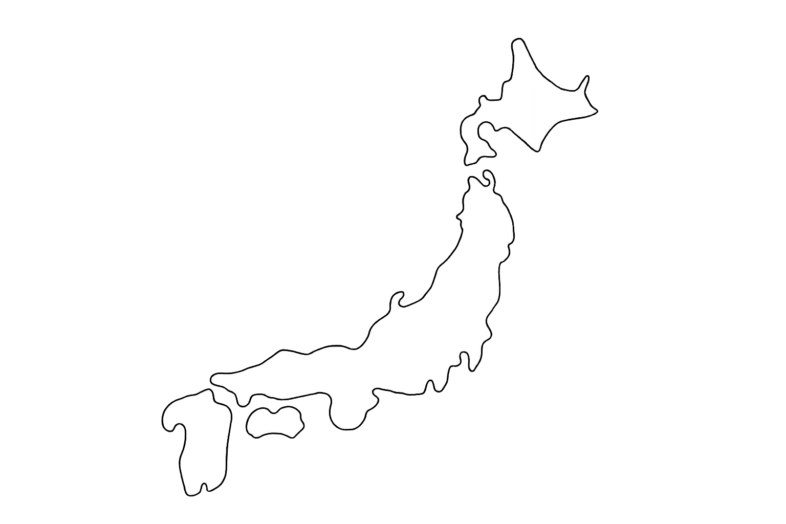
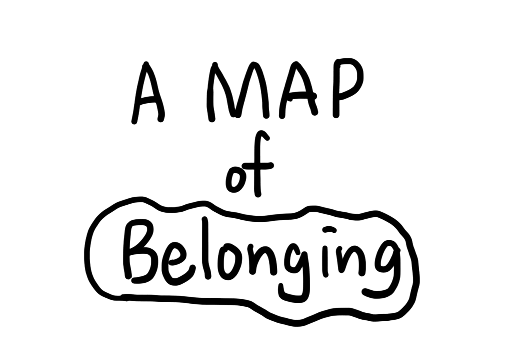

concept
This project challenges that premise by presenting the perspective that belonging is not a fixed concept, but something that can be expanded, much like creating one’s own personal world map.
In today’s society, where mobility is becoming increasingly common, mainstream narratives often frame “mobility” as “exile,” suggesting that to belong to one place, one must leave another behind. This is a mindset that treats one’s hometown as something to be overwritten—much like registering a new address when moving.
I have moved many times within Japan—from Hokkaido to Shizuoka, Tokyo, and Chiba—yet I do not feel that my sense of “home” has shifted from place to place. Rather, each of these places remains within me, forming a “sense of belonging” that coexists within my identity.
I believe that for many people—not just international students, immigrants, or those who move frequently—identity is not rooted in a single place of origin, but is formed through multiple regions and the memories and cultures associated with them. For example, even a place one once visited merely as a tourist holds personal memories and is a special place for each individual. When one returns there years later, everyone is likely to reflect on their past self and those memories. Isn’t this relationship between a place and a person also a form of belonging?